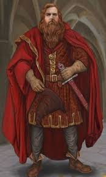

Fundada por Godrico Gryffindor, um dos quatro fundadores de Hogwarts, a Casa Grifinória tem uma história rica em coragem e heroísmo. Gryffindor valorizava a bravura acima de tudo e queria que sua casa fosse o lar daqueles que possuíam coragem verdadeira.
Ao longo dos séculos, a Grifinória produziu alguns dos bruxos mais corajosos e nobres do mundo mágico. Desde Godrico Gryffindor até os dias atuais, nossa casa mantém os valores de coragem, determinação e lealdade.
O símbolo do leão representa nossa força e bravura, enquanto nossas cores - vermelho escarlate e dourado - simbolizam a paixão e a nobreza que caracterizam todos os grifinórios.
